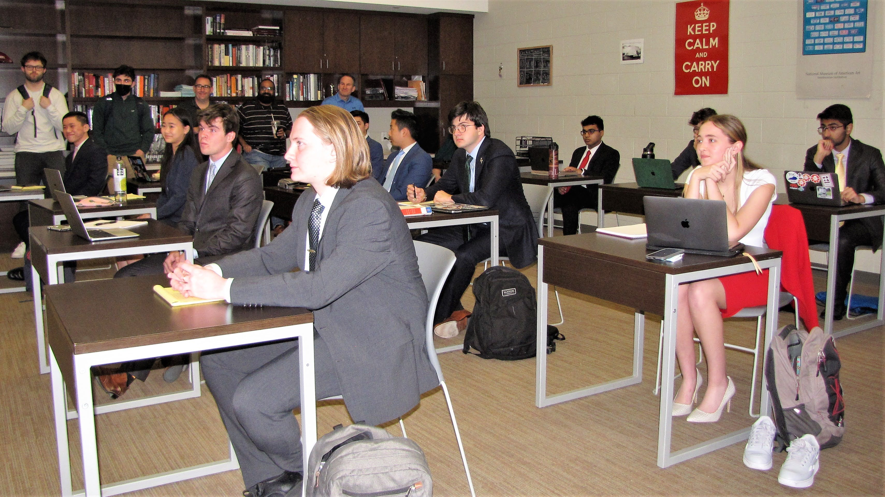

The 2022 MBA Extemp Round Robin, Held in Nashville (I'm on the left!)
2021-2022 Season
National Speech and Debate Tournament
California High School Speech Association State Championship
Tournament of Champions
CFL Speech State Qualifiers
MBA Extemp Round Robin
California Invitational Berkeley Debate
Palm Classic (Formerly Stanford)
Barkley Forum for High Schools
James Logan Martin Luther King Jr Invitational
Arizona State HDSHC Invitational
Glenbrooks Speech and Debate Tournament
2020-2021 Season
National Speech and Debate Tournament
California High School Speech Association State Championship
Tournament of Champions
SVUDL Spring Invitational
Calif. Coast District Tournament
CFL State Quals Speech
Cal Invitational UC Berkeley
35th Annual Stanford Invitational
Barkley Forum for High Schools
CFL Speech 3
James Logan Martin Luther King Jr Invitational
Arizona State HDSHC Invitational
Glenbrooks Speech and Debate Tournament
CFL Speech 2
Florida Blue Key Speech and Debate Tournament
CFL Speech 1
Nano Nagle Classic Formerly Voices
Yale University Invitational
Stephen Stewart Middle and High School Invitational
Jack Howe Memorial Tournament
2019-2020 Season
Cal Invitational UC Berkeley
34th Annual Stanford Invitational
CFL Speech 3 Milpitas
James Logan Martin Luther King Jr Invitational
2018-2019 Season
Calif. Coast District Tournament
Cal Invitational UC Berkeley
33rd Annual Stanford Invitational
Back
Home